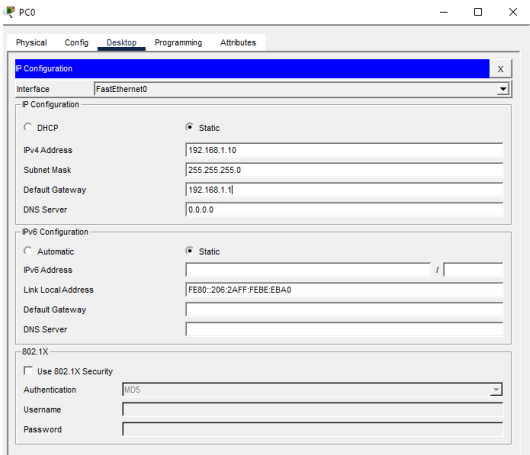
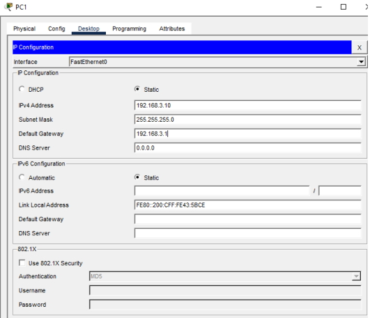

ACTIVIDAD 06: IMPLEMENTACIÓN IPSEC VPN
Implementación de VPN IPSec Sitio a Sitio.
ACTIVIDAD 06
IMPLEMENTACIÓN IPSEC VPN
Alumno: Alonso Castillo Omar Karim (179033)
Materia: CNO V – Seguridad Informática
Profesor: Mtro. Servando López Contreras
Universidad Politécnica de San Luis Potosí
Introducción
La protección de la información en entornos de red es un aspecto fundamental dentro del estudio de la seguridad informática. En particular, cuando los datos deben atravesar infraestructuras públicas como Internet, resulta indispensable implementar mecanismos que aseguren su confidencialidad e integridad. Una de las soluciones más utilizadas para este propósito son las Redes Privadas Virtuales (VPN), que permiten establecer canales seguros de comunicación entre diferentes sedes o usuarios.
Dentro de las tecnologías disponibles, IPSec (Internet Protocol Security) se ha consolidado como un estándar ampliamente adoptado, ya que ofrece funciones de cifrado y autenticación directamente en la capa de red.
Objetivo
El propósito de esta práctica es comprender y aplicar los conceptos fundamentales de seguridad en redes mediante la implementación de una VPN IPsec sitio a sitio en el simulador Packet Tracer. A través de la configuración de routers Cisco, se busca establecer un túnel seguro que permita la comunicación entre dos redes locales a través de un proveedor de servicios simulado, garantizando la protección de la información mediante técnicas de cifrado y autenticación.
Objetivos Específicos:
- Configurar el direccionamiento IP en los dispositivos de la topología (routers, switches y PCs).
- Establecer rutas estáticas que aseguren la conectividad extremo a extremo entre las redes.
- Implementar un túnel VPN IPsec con parámetros de seguridad robustos, incluyendo cifrado AES-256.
- Verificar el funcionamiento del túnel mediante pruebas de conectividad entre las LANs.
- Confirmar que el tráfico intercambiado entre las redes viaja de forma cifrada y protegido contra posibles interceptaciones.
Topología de Red
1. Configuración Inicial
Configuración básica de los dispositivos para establecer la conectividad IP antes de la implementación del túnel VPN.
Router 1 (R1)
Router 3 (R3)
ISP Router
2. Licencia de seguridad habilitada
En routers Cisco modernos (como los 1941), se necesita el conjunto de funciones de seguridad para usar IPSec. Se debe guardar la configuración (write) y reiniciar el router para que se active.
Comando: license boot module c1900 technology-package securityk9
Ejemplo con R1 (se aplicó en todos los routers)
3. Implementación de ACLs
Se debe definir qué tráfico debe ser cifrado. En este caso, el tráfico que va de la red local de R1 (192.168.1.0/24) a la de R3 (192.168.3.0/24).
ACL en Router 1
ACL en Router 3
4. Phase 01: ISAKMP policy
Aquí se define cómo los routers se autenticarán y negociarán la seguridad inicial. El objetivo de esta etapa es crear un "canal seguro" inicial donde los routers puedan negociar cómo protegerán el tráfico final.
- crypto isakmp policy 10: Crea una política de negociación. El número '10' es la prioridad.
- encryption aes 256: Define el estándar de cifrado AES con una llave de 256 bits.
- authentication pre-share: Indica que los routers se identificarán mediante una contraseña secreta.
- group 5: Establece el uso del algoritmo Diffie-Hellman (DH) Grupo 5.
Autenticación de Extremo a Extremo
Se define la "palabra de paso" (secretkey) y se vincula específicamente a la IP pública del peer remoto.
Comando: crypto isakmp key secretkey address [IP_PEER]
5. Phase 02: IPSec transform-set
Mientras que la Fase 1 establece el "túnel de gestión", la Fase 2 define cómo se protegerán los datos reales del usuario que atraviesan la red pública. Aquí se acuerdan los algoritmos de cifrado y hash específicos para el tráfico de datos.
Comando global: crypto ipsec transform-set [NOMBRE] esp-aes 256 esp-sha-hmac
- esp-aes 256: Utiliza el protocolo Encapsulating Security Payload (ESP) para cifrar el paquete completo con AES-256.
- esp-sha-hmac: Aplica un código de autenticación de mensajes (HMAC) basado en SHA para asegurar la integridad.
Configuración IP
PC0 Configuration
PC1 Configuration
Ping
6. Crear el mapa criptografico
El Crypto Map es el componente de software que amalgama todas las piezas anteriores: quién es el vecino, qué tráfico cifrar y qué métodos de seguridad usar. Es el "manual de instrucciones" que el router consulta antes de enviar un paquete.
- crypto isakmp policy 10: Crea una política de negociación. El número '10' es la prioridad.
- encryption aes 256: Define el estándar de cifrado AES con una llave de 256 bits.
- authentication pre-share: Indica que los routers se identificarán mediante una contraseña secreta.
- group 5: Establece el uso del algoritmo Diffie-Hellman (DH) Grupo 5.
7. Aplicar el mapa criptografico
Tener el mapa creado no sirve de nada si no se le indica al router en qué puerto físico debe actuar. Este es el paso final donde la política de seguridad se vuelve operativa.
- interface g0/0
- Entra en la configuración de la interfaz física que está conectada hacia el exterior (Internet/WAN).
- crypto map IPSEC-MAP
- Propósito: Activa el motor de cifrado en esta interfaz. A partir de este momento, cada paquete que intente salir por g0/0 será comparado con la ACL del mapa; si coincide, se cifra y se encapsula antes de salir al mundo exterior.
Conclusión
El aprendizaje principal de esta configuración radica en la comprensión de la modularidad de la seguridad. Dividir el proceso en Fase 1 (Control) y Fase 2 (Datos) enseña que una comunicación robusta no nace de un solo paso, sino de una negociación jerárquica. Primero se establece un entorno de confianza mutua y, solo después de asegurar esa "conversación", se permite que el tráfico privado del usuario toque la red pública.
Por otro lado, este despliegue refuerza la importancia de la precisión técnica y la simetría. En el mundo de la criptografía aplicada, el más mínimo error en un algoritmo de hash o en un grupo Diffie-Hellman resulta en un fallo total de conectividad. Esto nos enseña que la seguridad informática es una disciplina de exactitud, donde el éxito no es solo que un paquete llegue a su destino, sino que lo haga de forma invisible e inalterable para cualquier observador externo.
Finalmente, el uso de herramientas de diagnóstico como show crypto ipsec sa transforma nuestra visión de la red: pasamos de buscar una simple conexión a validar la integridad de los datos. El aprendizaje real se consolida al entender que somos capaces de crear un "túnel privado" dentro del caos de Internet, garantizando que la confidencialidad sea una constante y no una variable en la comunicación empresarial.